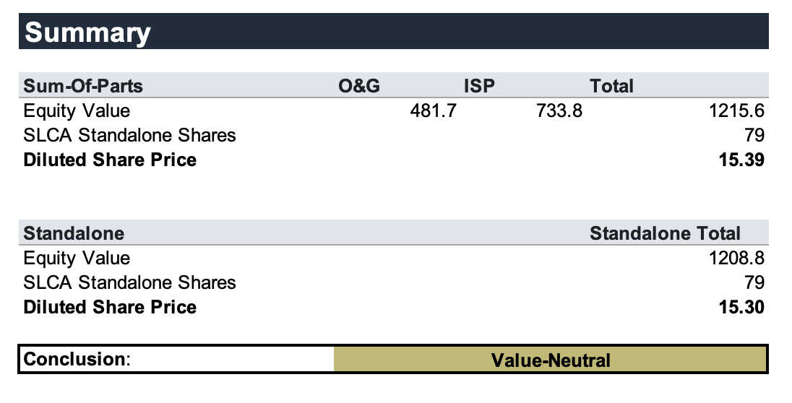
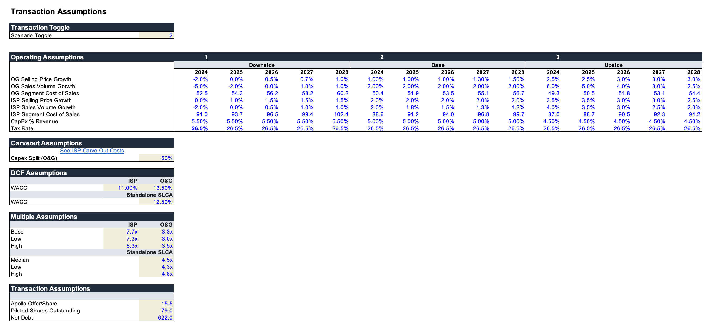
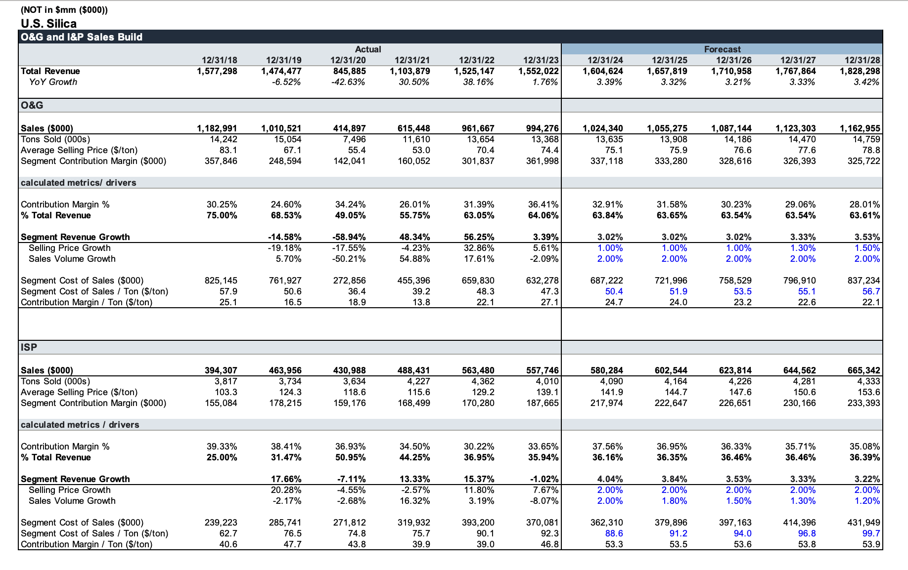
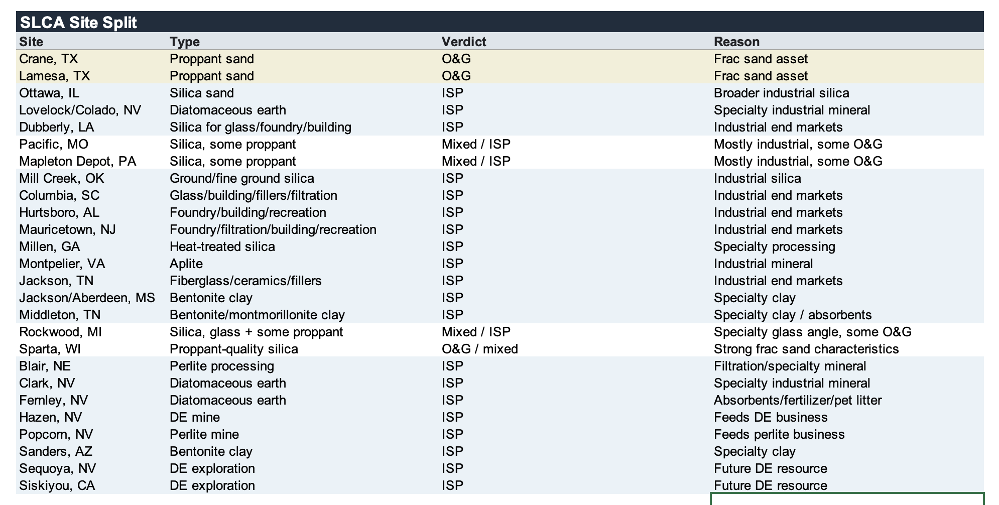
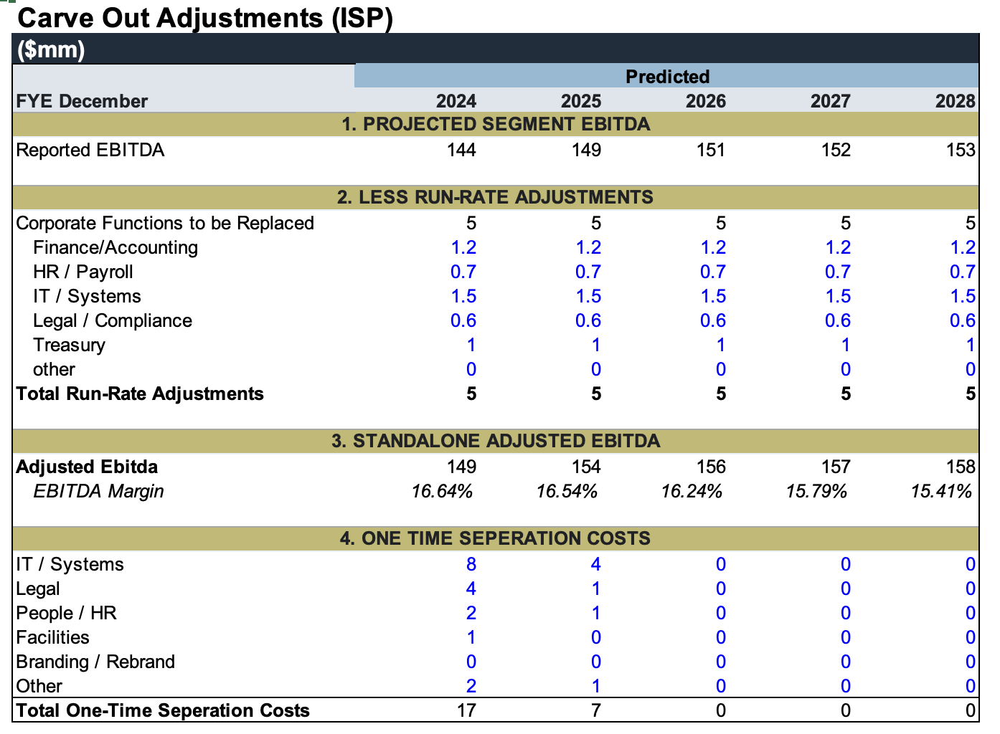
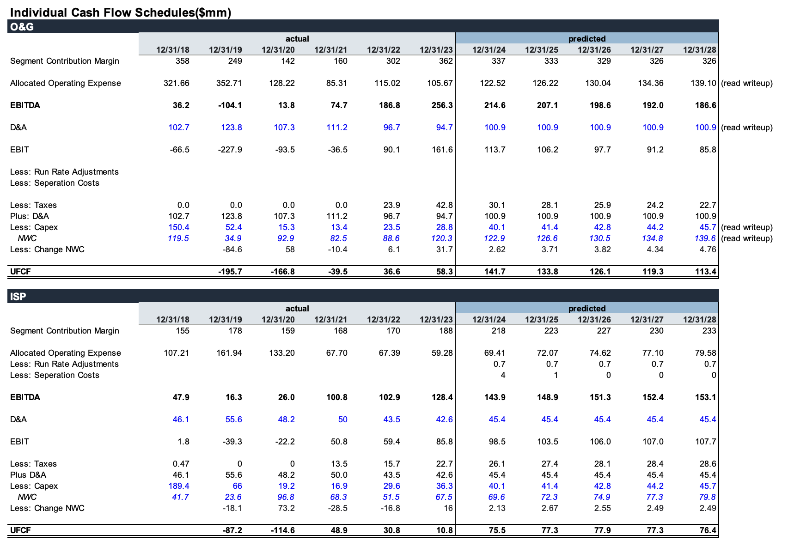
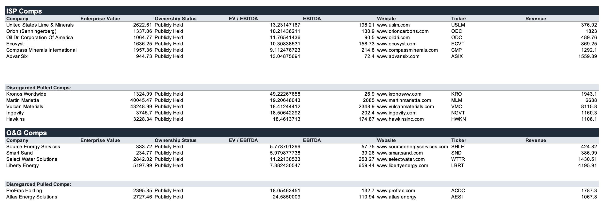
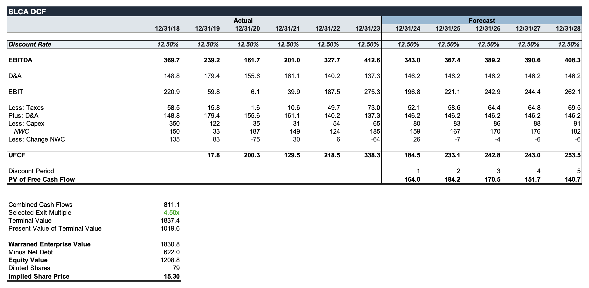
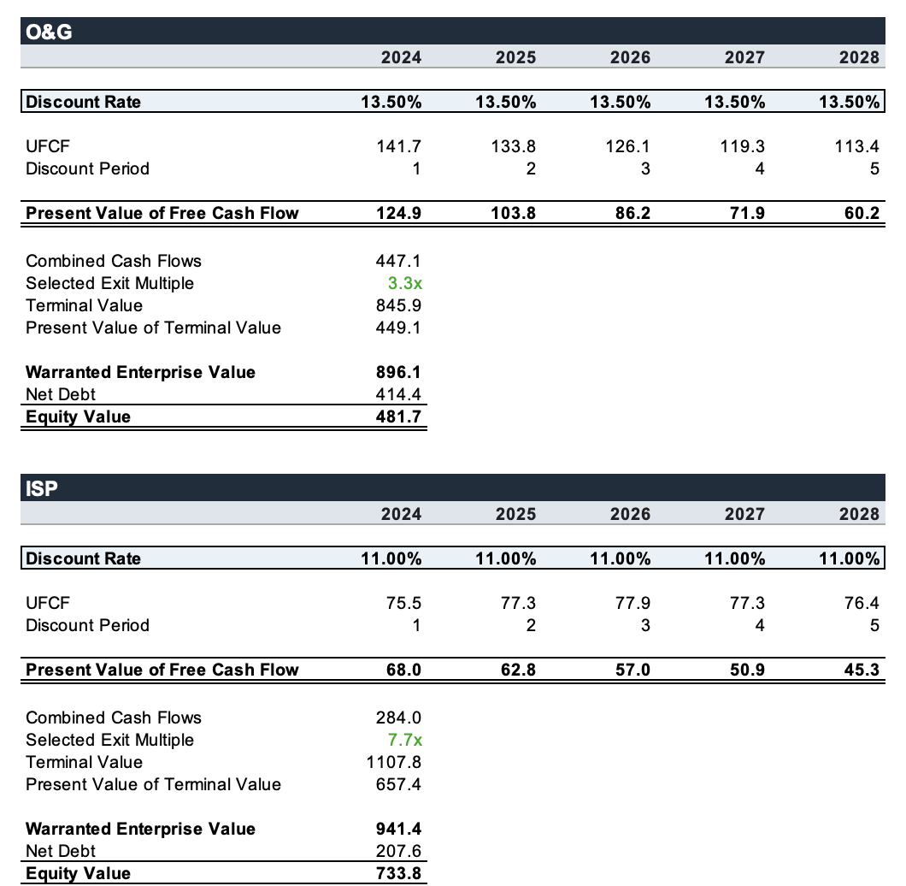

Should U.S. Silica Have Separated ISP and O&G?
In April 2024, Apollo agreed to acquire U.S. Silica for $15.50 per share in an all-cash transaction valuing the company at approximately $1.85 billion. U.S. Silica operates two pretty different businesses. Oil & Gas Proppants, or O&G, sells frac sand into the energy market, while Industrial & Specialty Products, or ISP, sells silica and other industrial minerals into more diversified end markets. O&G is larger and much more cyclical, while ISP has steadier margins and less exposure to oil activity. U.S. Silica had looked at separating the businesses before, and Piper Sandler also valued the two segments separately during the strategic review.
This transaction interested me because the breakup logic seemed pretty obvious at first. ISP is the better business and deserves a much higher multiple, while O&G drags the consolidated company toward a frac sand / energy valuation. So why not separate ISP, let it trade on its own, and unlock the higher multiple? I wanted to see if that actually created value. I built separate operating forecasts for ISP and O&G, allocated cash flow between the businesses, went facility by facility to split U.S. Silica's assets, modeled carveout costs, and then valued the businesses independently.
Executive Summary
Splitting U.S. Silica was basically value neutral in my model: the breakup case produces approximately $15.39 per share versus $15.30 as a standalone company, while Apollo's $15.50 cash offer let shareholders receive the breakup value without taking separation risk.
It is highly recommended that you download this spreadsheet.
Executive Summary
The biggest result of this model is that splitting U.S. Silica was basically value neutral. My Sum of Parts valuation produces approximately $1.216bn of equity value, or $15.39 per share, while my standalone U.S. Silica DCF produces approximately $1.209bn, or $15.30 per share. So after separating the entire company and giving ISP a 7.7x exit multiple compared to only 3.3x for O&G, the difference is literally $0.09 per share, or around 0.6%.

This was pretty surprising to me. My original thinking was that ISP was basically trapped inside a frac sand company and the market wasn't giving it the valuation it deserved. I still think that part is true, but what I was wrong about was assuming that unlocking a higher multiple automatically creates shareholder value. ISP would need its own corporate functions, separation expenses have to be paid, assets have to actually be divided, and O&G still exists after the transaction at a much lower valuation. Once all of this is included, almost all of the theoretical SOTP upside disappears.
Apollo's $15.50 offer is also slightly above both my $15.30 standalone valuation and $15.39 SOTP valuation. To me thats the most important point of the deal. Shareholders basically received the breakup value immediately, without actually having to do the breakup. I did not build an Apollo LBO in this model because frankly that wasn't the question I was interested in. I wanted to understand the sell-side decision and why U.S. Silica would sell the whole company instead of separating ISP and O&G.
Assumptions
There are three toggleable operating cases in the model based on selling price growth, volume growth, cost per ton, and CapEx. I use the base case throughout this writeup. For O&G, I forecast revenue using tons sold multiplied by average selling price. I assume 2% annual volume growth with modest pricing increases, while cost per ton also increases through the forecast. This means O&G can still grow revenue while contribution margins gradually compress, which I think is an important distinction.
ISP is modeled similarly, but the business has a much more stable operating profile. I assume 2% selling price growth and volume growth starting at 2% before tapering slightly. For valuation, I use an 11.0% WACC and 7.7x exit multiple for ISP versus a 13.5% WACC and 3.3x multiple for O&G. Standalone U.S. Silica uses a 12.5% WACC and 4.5x exit multiple. The difference between those ISP and O&G multiples is basically the entire reason this project exists.

Revenue Build
Rather than just applying a consolidated revenue growth assumption, I built each segment from tons sold and average selling price. U.S. Silica generated approximately $1.55bn in revenue in 2023, and in my base case this grows to around $1.83bn by 2028. O&G grows from approximately $994M to $1.16bn, while ISP increases from roughly $558M to $665M.

The more interesting difference is underneath revenue. O&G costs increase faster than pricing in my model and contribution margins therefore compress, while ISP stays much more steady. O&G's historical volatility is also pretty insane. Revenue fell from over $1bn in 2019 to approximately $415M in 2020 before recovering to almost $1bn by 2023. ISP obviously moves too, but nowhere close to that much, which is a big reason why valuing these two businesses at the same multiple makes no sense.
Site Split
Another thing I wanted to understand was what physically gets separated. It is easy to call something a "Sum of Parts" in Excel, but in reality these businesses own mines and processing facilities all over the country and those assets actually have to go somewhere. I went facility by facility and assigned U.S. Silica's locations based on their primary products and end markets.

Crane and Lamesa are fairly straightforward O&G assets because they primarily produce frac sand. Most of the silica, diatomaceous earth, perlite, clay and specialty mineral facilities fit into ISP. There are also several mixed facilities where the answer is less obvious. Obviously I dont have management data showing exactly how each location would legally or operationally be divided, but doing this still helped me understand the actual physical separation instead of treating ISP and O&G as two imaginary spreadsheet companies.
ISP Carve Out
This is where separating ISP starts looking less amazing. ISP currently benefits from corporate functions that sit inside U.S. Silica, so if it became a standalone business it would need to replace finance and accounting, HR and payroll, IT, legal and compliance, treasury, and other functions. I also modeled one-time separation costs related to systems, employees, legal work, facilities and other carveout requirements.

I want to be upfront that this is probably the weakest part of my model. Without management access there is no way for me to know exactly what stranded corporate expenses, TSAs, or actual separation costs would look like. But assuming zero costs is obviously even less realistic. The whole point of this schedule is to stop the SOTP from becoming a fantasy where ISP gets a way higher multiple and somehow separates from O&G for free.
Individual Cash Flow
U.S. Silica does not report completely independent financial statements for ISP and O&G, so I had to create them. I start with segment contribution margin, allocate operating expenses between the businesses, and then layer in D&A, taxes, CapEx, working capital and carveout adjustments to calculate separate UFCF. I tried to keep the consolidated numbers tied back to U.S. Silica wherever I could because I did not want to invent two businesses that looked better than the company actually does.

O&G generates more absolute cash flow but it is much more volatile and exposed to commodity cycles. ISP generates less absolute cash flow but the underlying business is steadier. This is also why I didn't want to just do an EBITDA SOTP and call it a day. The actual cash flow underneath each segment matters, especially when the two businesses have pretty different CapEx requirements and operating risk.
Public Comps
I pulled separate comparable-company groups for ISP and O&G because using one comp set for the consolidated company would defeat the entire point of the analysis. For ISP, I looked at industrial minerals and specialty materials companies including United States Lime & Minerals, Orion, Oil-Dri, Ecovyst, Compass Minerals and AdvanSix. For O&G, I looked at Source Energy Services, Smart Sand, Select Water Solutions and Liberty Energy.

ISP companies generally trade at substantially higher EBITDA multiples, which isn't surprising given the lower cyclicality and more diversified end markets. However, I still haircut the ISP multiple because a separated ISP would be smaller and carry carveout / execution risk. I therefore use a 7.7x exit multiple for ISP and 3.3x for O&G in the base case. That is a massive spread, which is why I originally expected the breakup valuation to be way higher than the standalone DCF.
Standalone U.S. Silica DCF
Before doing the breakup valuation I needed something to compare it to. Using a 12.5% WACC and 4.5x exit multiple, my standalone U.S. Silica DCF produces approximately $1.209bn of equity value, or $15.30 per diluted share.

Apollo offered $15.50. I thought this result was pretty interesting because my independent operating build lands extremely close to the actual transaction price. Obviously this does not mean $15.30 is objectively the exact value of U.S. Silica, but it does give me some confidence that the deal price was within a reasonable range. More importantly, $15.30 becomes the hurdle rate for the breakup. If separating ISP and O&G does not create meaningfully more value than that, then shareholders are taking a lot of execution risk for basically nothing.
Carve Out DCFs
Finally, I valued ISP and O&G independently. ISP receives an 11.0% WACC and 7.7x exit multiple because of its steadier cash flows and diversified industrial end markets. O&G gets a 13.5% WACC and 3.3x exit multiple because it is far more cyclical and tied to oil activity.

Combined, the two businesses produce approximately $1.216bn of equity value, or $15.39 per share. Standalone U.S. Silica was $15.30 per share. That means this entire separation creates approximately $7M of incremental equity value, or $0.09 per share. Around 0.6%.
Basically nothing.
This was the biggest takeaway from the project. I started this thinking the SOTP would show U.S. Silica should have split the businesses. ISP clearly deserves a higher valuation than O&G, and that part ended up being true. But the higher ISP multiple gets almost entirely eaten up by separation costs, standalone expenses, and the lower valuation of O&G. The conglomerate discount can be real while still being incredibly difficult to actually monetize.
Apollo offered $15.50 in cash, slightly above both my standalone and breakup valuations, without requiring shareholders to wait around for a complicated separation. For me thats really the larger point of the transaction. U.S. Silica did not necessarily stay together because ISP and O&G were perfect businesses to own together. They stayed together because separating them was basically value neutral.